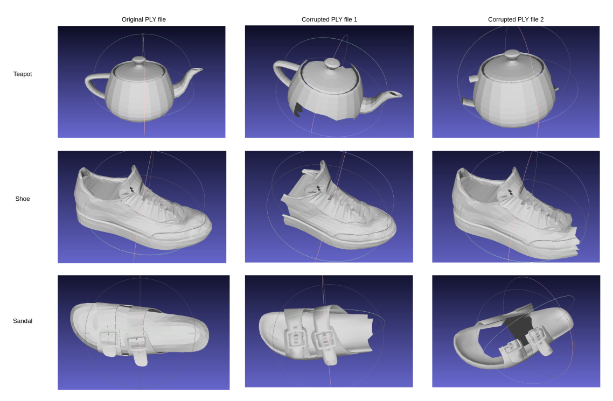
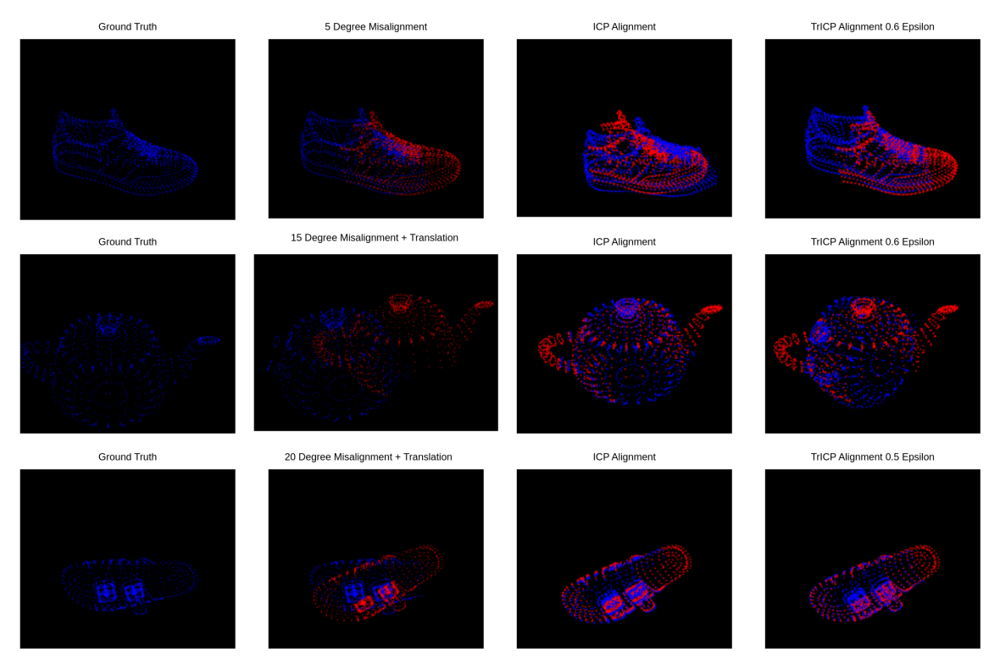

ICP and Trimmed ICP
Implementations of the ICP and the Trimmed ICP algorithm from scratch in C++ using Eigen. The task consisted in evaluating the performance of both algorithms aligning two corresponding pointclouds in the prescence of noise and outliers. As shown in the figure below.
